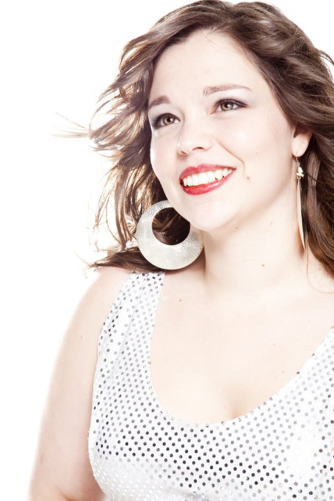

Présentation
Enfance et débuts musicaux
Pour les personnes que j'ai croisées dans mon chemin, ceux-ci parlaient de moi comme étant « la p'tite fille qui chante tout le temps ». Cette passion pour la musique n’a su qu’augmenter depuis le début. Dès l'âge de 8 ans, mes parents m'ont inscrit chez Pierre-Yves Musique pour suivre un cours de clavier populaire. Après une année, ma professeur, Yolande Gendron, nous a recommandé de suivre une formation classique avec les sœurs du couvent Jésus-Marie. Étant de nature plutôt paresseuse, mais assez douée, j'avais besoin d'un encadrement serré et strict afin de développer tout mon potentiel et de repousser mes limites. C'est alors que j'ai entamé ma première année officielle dans le programme Vincent D'Indy avec M. Étienne Génier (supervisé par Soeur Marthe Poliquin).
À cette époque, M. Génier débutait dans le domaine de l'enseignement musical. Toutefois, cela n'aura pas été de longue durée, puisque l'école Jésus-Marie ferma définitivement en juin de la même année. C'est donc à ce moment-là qu’on s’est tourné vers des enseignants privés. Donc c’est avec Mme Dominique Guérin que je poursuivis ma formation les deux années suivantes. Malheureusement celle-ci ferma ces portes quelque temps après. De fil en aiguille, c'est ce qui m'a permis de rencontrer Mme Marie-Claude Gagnier dont j'ai pu poursuivre ma formation jusqu'à mes 17 ans.
Musique populaire
Tout au long de ma formation classique, j'ai constamment baigné dans un milieu musical populaire. Mon père, musicien à ses heures, était un touche-à-tout musical. Dès le début, j'ai assisté mon père, car celui-ci voulait me montrer de quelle manière accompagner des musiciens. Lors de ma période de 10 à 12 ans, pendant que les enfants de mon âge jouaient avec leurs amis, je me retrouvais dans le sous-sol de l'Église St-Eugène avec les violoneux des loisirs folkloriques de Valleyfield. Je ne faisais qu'écouter, puis plus que le temps avançait, j'étais en mesure d'accompagner mon père au début de la soirée. Et puis un jour, lors d'une répétition, la pianiste officielle ne se présenta pas. C'est à cet instant que les musiciens m'ont dit : ''Vas-y la p'tite! C'est en Do!” Ce n'est pas peu dire. Ce sont ces quelques années à suivre ce groupe de musiciens, n'ayant pas en ma possession des partitions et en sautant des temps une fois de temps en temps, qui ont contribué à développer mon oreille bien malgré moi.
Parcours professionnel
Dès l'âge de 15 ans, je donnais quelques cours aux débutants afin d'assister mon enseignante. Depuis ce temps, je n'ai jamais cessé. En complément, j'ai poursuivi mon parcours jusqu'à mon acceptation au CÉGEP Marie-Victorin dans le programme de chant populaire en 2004. Ce fut une expérience toute à la fois stimulante et stressante. Mon désir d'explorer un autre visage de la musique combiné avec l'envie de changement à contribuer à mon succès. Il est important de rappeler que je n'avais pas de formation en chant, et que mes compagnons de programme avaient tous en moyenne de 7 à 8 ans d'expérience dans leurs champs d'expertise. C'est en partie grâce au niveau théorique et auditif que j'avais acquis durant ma formation classique, mais aussi grâce à ma détermination de réussir.
En parallèle à ma formation au CÉGEP, j'ai travaillé chez Labelle Musique comme enseignante. Cette expérience a été bénéfique, car j'apprenais autant que mes élèves. Rapidement, j'ai goûté au domaine de la musique populaire que la pianiste en moi n'avait jamais eu à faire face. Ces onze dernières années de travail avec la collaboration de toute une équipe de professeurs-musiciens m'ont permis d'établir une technique d'enseignement bien à moi. Maintenant, chaque expérience personnelle musicale ainsi que chaque élève que je croise enrichissent ma façon d'enseigner et perfectionnent mon approche de l'enseignement. L'automne suivant ma graduation, je me suis fait approcher par la commission scolaire des Trois-Lacs pour enseigner la musique au primaire. N'ayant jamais mis les pieds dans une université, je ne me sentais pas apte à effectuer cette tâche colossale. Pourtant M. Denis Labelle (propriétaire de Labelle Musique) semblait convaincu du contraire. Donc, à 22 ans, je tentais ma chance comme spécialiste en musique à l'école de la Riveraine. Comme certains disent: « J'ai appris sur le tas ». Je ne vous cacherai pas que j'ai vécu des moments mémorables autant que des moments de découragements. Depuis ce temps, je voue une admiration profonde aux enseignants des écoles. J'ai donc gagné ma vie de 2007 à 2011 à travers plusieurs contrats de remplacement au primaire à temps plein ainsi qu'en donnant des cours privés le soir.
En 2011, je finis enfin par écouter ce que ma petite voix intérieure me criait depuis 4 ans et je cesse d'enseigner dans les écoles pour me consacrer à mon enseignement privé chez Labelle Musique. C'est officiellement en juin 2015 que j'ai quitté cette belle équipe pour développer ma propre entreprise. C'est aujourd'hui (mars 2017) après un congé de maternité et une réorganisation de ma vie professionnelle que j'ouvre encore plus de disponibilités et que je vise de plus en plus grand.
Au plaisir de vous rencontrer!
INSCRIPTION